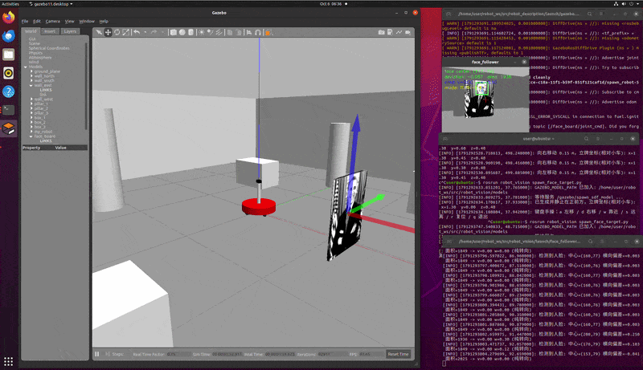
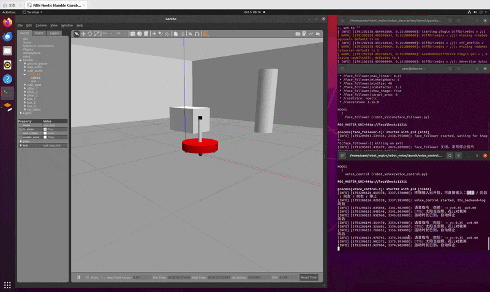

第五章：ROS + OpenCV 视觉追踪与语音控制
本章在第四章两轮差速小车（mbot）底盘之上，实现两大部分实验：
- 视觉追踪（
robot_vision）：通过 OpenCV 人脸检测识别顶置 Kinect 相机采集到的图像， 计算人脸中心偏离图像中心的横向偏差与人脸面积，使用比例控制器（P 控制）发布/cmd_vel速度指令，使小车自动转向面朝目标并保持距离跟随。 - 语音控制（
robot_voice）：接收“向前 / 向后 / 向左 / 向右 / 停止”等语音命令， 发布对应的/cmd_vel运动指令，并通过语音合成（TTS）播报反馈文本 （如“太阳当空照，花儿对我笑”）。
环境说明：本章为 ROS1（Melodic / Noetic）功能包，依赖
rospy、cv_bridge、sensor_msgs、geometry_msgs、std_msgs等；语音部分同时兼容离线无声卡的虚拟机 与真实讯飞语音 SDK 接入。
目录结构
src/chap5/
├── robot_vision/ # 第一部分：视觉识别与控制
│ ├── CMakeLists.txt
│ ├── package.xml
│ ├── launch/
│ │ ├── face_follower.launch # 人脸追踪（P 控制）启动文件
│ │ ├── spawn_face_target.launch # 在 Gazebo 中生成人脸立牌目标
│ │ ├── mbot_intelligence.launch # 一键拉起视觉 + 语音
│ │ ├── face_detector.launch # 人脸检测（仅画框演示）
│ │ ├── usb_cam.launch # USB 相机驱动
│ │ └── freenect.launch # Kinect (freenect) 驱动
│ ├── scripts/
│ │ ├── face_follower.py # ★ 人脸追踪 + P 控制 + /cmd_vel
│ │ ├── face_detector.py # 人脸检测（画框发布图像）
│ │ ├── motion_detector.py # 运动检测
│ │ └── cv_bridge_test.py # cv_bridge 用法示例
│ ├── data/haar_detectors/ # Haar 级联分类器
│ └── config/ # rviz 配置
└── robot_voice/ # 第二部分：语音识别与输出
├── CMakeLists.txt
├── package.xml
├── launch/
│ └── voice_control.launch # 语音控制启动文件
├── scripts/
│ └── voice_control.py # ★ 语音命令 -> /cmd_vel + TTS 反馈
├── src/ # 讯飞 SDK C++ 节点（真实 SDK 接入）
│ ├── iat_publish.cpp # 语音识别（发布 voiceWords）
│ ├── tts_subscribe.cpp # 语音合成（订阅 voiceWords）
│ └── voice_assistant.cpp # 语音助手整合
├── include/robot_voice/ # 讯飞 SDK 头文件
└── libs/ # 讯飞 SDK 动态库 libmsc.so
第一部分：视觉追踪 face_follower
演示效果：

节点逻辑
- 订阅相机 RGB 图像（
input_rgb_image，launch 中重映射为/camera/rgb/image_raw）， 通过cv_bridge转换为 OpenCV 的 BGR 格式。 - 灰度化 + 直方图均衡后，使用 Haar 级联分类器
haarcascade_frontalface_default.xml检测人脸（正面失败时可用侧面分类器兜底）。 - 计算人脸中心
(cx, cy)与图像中心的横向偏差及人脸面积。 - 比例控制：
- 角速度
w = kp_angular * err_x（人脸偏右 → 右转），带死区与限幅（±0.5 rad/s）； - 线速度默认关闭（
only_turn=true纯原地转向）；设为false后按v = kp_linear * (target_area - area) / target_area（面积过小/太远 → 前进）保持距离， 并叠加防贴脸死区（过近时停止/倒退）。 - 发布
geometry_msgs/Twist到/cmd_vel，同时弹出 OpenCV 调试窗口， 标注人脸框、图像中心、人脸中心与偏差/面积/速度等信息。
话题接口
| 方向 | 话题 | 类型 | 说明 |
|---|---|---|---|
| 订阅 | input_rgb_image（→ /camera/rgb/image_raw） |
sensor_msgs/Image |
相机 RGB 图像 |
| 发布 | /cmd_vel |
geometry_msgs/Twist |
差速底盘速度指令 |
| 发布 | ~image_out |
sensor_msgs/Image |
标注后的图像 |
关键参数（launch 可配）
| 参数 | 默认值 | 说明 |
|---|---|---|
kp_angular |
1.2 | 横向偏差 → 角速度比例系数 |
kp_linear |
0.6 | 面积偏差 → 线速度比例系数 |
max_linear / max_angular |
0.25 / 0.5 | 速度限幅 |
target_area |
0（自动） | 目标人脸面积（像素），0 表示取图像面积的 1/16 |
dead_zone |
0.05 | 横向偏差死区（归一化） |
only_turn |
true | 纯原地转向模式（线速度恒 0）；false 启用距离保持 + 防贴脸死区 |
cascade_frontal |
OpenCV 默认 | 正面人脸分类器路径 |
第二部分：语音控制 voice_control
演示效果：

节点逻辑
- 通过
/voice_cmd话题（std_msgs/String）或交互式终端接收命令。 - 将命令映射为差速底盘速度：
向前/向后 → 线速度，向左/向右 → 角速度，停止 → 零速。 - 发布
geometry_msgs/Twist到/cmd_vel（10Hz 持续发布，move_duration后自动停止）。 - 收到命令后触发 TTS 反馈，默认播报“太阳当空照，花儿对我笑”。
命令映射
| 语音命令 | 等价英文 | 动作 |
|---|---|---|
| 向前 / 前进 | forward | linear.x = +linear_speed |
| 向后 / 后退 | backward | linear.x = -linear_speed |
| 向左 / 左转 | left | angular.z = +angular_speed |
| 向右 / 右转 | right | angular.z = -angular_speed |
| 停止 / 停下 / 停 | stop | 全零（立即停车） |
话题接口
| 方向 | 话题 | 类型 | 说明 |
|---|---|---|---|
| 订阅 | voice_cmd（→ /voice_cmd） |
std_msgs/String |
语音命令文本 |
| 发布 | /cmd_vel |
geometry_msgs/Twist |
差速底盘速度指令 |
| 发布 | ~tts_topic（→ /voice_tts） |
std_msgs/String |
待合成的反馈文本 |
TTS 兼容策略（tts_backend 参数）
| 取值 | 说明 |
|---|---|
log（默认） |
离线/无声卡环境：日志输出 + 发布到 ~tts_topic |
espeak / festival |
Linux 命令行语音合成（需自行安装） |
say |
macOS 自带语音合成 |
sdk |
交由讯飞 SDK 节点 tts_subscribe.cpp 订阅 ~tts_topic 播报 |
voice_control.py 始终把反馈文本发布到 ~tts_topic，因此无论使用哪种后端，
都能把文本交给下游真实 SDK 节点（把 tts_topic 重映射为 voiceWords 即可对接
tts_subscribe.cpp）。
环境准备与工作空间配置
本章的视觉/语音实验依赖第四章的 mbot 仿真底盘，因此需在同一个 catkin 工作空间中同时挂载
第四章的 mbot_description、mbot_gazebo 与本章的 robot_vision、robot_voice
共 4 个功能包。缺失 mbot_gazebo 会导致 roslaunch mbot_gazebo ... 报
RLException: [xxx] is neither a launch file in package ...（包名或 launch 文件不存在）。
1. 克隆仓库并切换分支
git clone https://github.com/OpenHUTB/ros2.git ~/ros2
cd ~/ros2
git checkout feat/chap5-vision-voice # 本章代码所在分支（若已合并主分支可跳过）
2. 创建 catkin 工作空间并软链接功能包
mkdir -p ~/catkin_ws/src
# 第四章：mbot 仿真底盘（Gazebo 仿真环境由它提供，缺少则无法启动仿真小车）
ln -s ~/ros2/src/chap4/mbot_description ~/catkin_ws/src/mbot_description
ln -s ~/ros2/src/chap4/mbot_gazebo ~/catkin_ws/src/mbot_gazebo
# 第五章：视觉追踪 + 语音控制
ln -s ~/ros2/src/chap5/robot_vision ~/catkin_ws/src/robot_vision
ln -s ~/ros2/src/chap5/robot_voice ~/catkin_ws/src/robot_voice
若不想用软链接，也可
cp -r复制到~/catkin_ws/src/。软链接的好处是仓库更新后 无需重新拷贝，catkin_make直接编译最新代码。
3. 编译并加载环境
cd ~/catkin_ws
catkin_make
source devel/setup.bash
全新克隆后遇执行权限问题：若
roslaunch报Cannot locate node of type [voice_control.py] in package [robot_voice]（或face_follower.py/spawn_face_target.py），通常是脚本在 Git 中缺失可执行权限 （git ls-files -s显示100644）。请先执行chmod +x ~/ros2/src/chap5/robot_voice/scripts/*.py ~/ros2/src/chap5/robot_vision/scripts/*.py后重新catkin_make；catkin_install_python安装的 Python 脚本需保留可执行位才能被rosrun/roslaunch定位并执行。前置依赖：ROS1 桌面完整版（Melodic 或 Noetic）、
gazebo_ros_pkgs、cv_bridge/OpenCV、rospkg等。若robot_voice的讯飞 SDK C++ 节点因缺少libmsc.so/libasound编译失败， 可关闭可选编译catkin_make -DROBOT_VOICE_BUILD_SDK=OFF（不影响纯 Python 的voice_control.py）。
4. 验证包与 launch 文件已就绪
# 四个包都应能解析出路径（软链接对应 ~/catkin_ws/src/ 下的包目录）
rospack find mbot_description mbot_gazebo robot_vision robot_voice
# 确认本章要用到的 launch 文件真实存在
ls $(rospack find mbot_gazebo)/launch/view_mbot_with_kinect_gazebo.launch
ls $(rospack find robot_vision)/launch/face_follower.launch
ls $(rospack find robot_voice)/launch/voice_control.launch
运行与测试指南（闭环复现）
以下每个终端在运行前都需执行一次 source ~/catkin_ws/devel/setup.bash（或已写入 ~/.bashrc）。
⚠️ 关于终端交互（stdin）：
roslaunch会吞掉节点的标准输入（stdin），因此依赖 键盘/控制台输入的两个脚本（spawn_face_target.py、voice_control.py）请在独立终端用rosrun启动，否则键盘指令无法送达。若坚持用roslaunch，语音控制请改用话题发布方式 （见下文“方案二·方式二”）。
方案一：仿真底座与视觉跟踪（人脸闭环）
终端 1 —— 启动带 Kinect 相机的 Gazebo 仿真小车
source ~/catkin_ws/devel/setup.bash
roslaunch mbot_gazebo view_mbot_with_kinect_gazebo.launch
Gazebo 中会出现带顶置 Kinect 的 mbot 小车。Kinect 的 RGB 图像话题为
/kinect/rgb/image_raw（由 mbot_description 的 kinect_gazebo.xacro 以
prefix="kinect" 生成，cameraName 即话题前缀）。
终端 2 —— 独立终端生成人脸立牌目标（支持键盘手操）
source ~/catkin_ws/devel/setup.bash
rosrun robot_vision spawn_face_target.py
这里必须用
rosrun在独立终端运行：脚本依赖termios读取stdin原始按键， 用roslaunch启动会因无 TTY 而自动禁用键盘（脚本会告警“当前环境无 TTY，键盘手操不可用”）。 若仅需立牌静止在正前方、无需键盘手操，也可用roslaunch robot_vision spawn_face_target.launch enable_keyboard:=false启动。
在小车正前方 x=1.3 y=0.0 z=0.4 处生成高对比度人脸立牌（标准 Gazebo 模型
models/face_board/，脚本会自动加入 GAZEBO_MODEL_PATH 并改用 file:// 绝对路径，
保证纹理 100% 渲染）。键盘可微调立牌位置：
| 按键 | 作用 |
|---|---|
a / d |
左移 / 右移 0.15 m |
w / s |
靠近 / 远离小车 0.10 m |
r |
复位到初始正前方 |
q |
退出控制 |
终端 3 —— 启动视觉人脸追踪
source ~/catkin_ws/devel/setup.bash
roslaunch robot_vision face_follower.launch cam_image_topic:=/kinect/rgb/image_raw
必须显式指定
cam_image_topic:=/kinect/rgb/image_raw：face_follower.launch的默认话题/camera/rgb/image_raw对应真实 freenect Kinect，而 Gazebo 仿真 Kinect 的前缀是/kinect。
预期现象：
- 弹出 OpenCV 调试窗口，用绿色框锁定人脸，叠加人脸中心（蓝点）、横向偏差、面积与
当前速度指令（
cmd: v=.. w=..）。 - 小车原地转向（默认
only_turn=true纯转向模式），自动把车头对准立牌；在终端 2 中 用a/d左右移动立牌，小车会同步左右转向跟随，保持目标居中。 - 需要“前进 + 保持距离”模式时改为
roslaunch robot_vision face_follower.launch cam_image_topic:=/kinect/rgb/image_raw only_turn:=false。
真实相机（freenect / usb_cam，非 Gazebo）：
# Kinect（freenect）：RGB 话题为 /camera/rgb/image_raw（face_follower 默认值，无需覆盖）
roslaunch robot_vision freenect.launch
roslaunch robot_vision face_follower.launch
# 或 USB 相机：RGB 话题为 /usb_cam/image_raw
roslaunch robot_vision usb_cam.launch
roslaunch robot_vision face_follower.launch cam_image_topic:=/usb_cam/image_raw
方案二：语音控制交互（解决 roslaunch 吞 stdin 问题）
语音控制节点 voice_control.py 同时支持“控制台键盘输入”与“/voice_cmd 话题订阅”，
提供两种启动方式，请按需选择。
方式一（推荐）：独立终端控制台交互
source ~/catkin_ws/devel/setup.bash
rosrun robot_voice voice_control.py
独立终端运行可正常接收
stdin键盘输入，直接在控制台敲入指令（回车触发）即可。
直接在控制台输入中文指令（回车触发），映射如下：
| 语音命令 | 等价英文 | 动作 |
|---|---|---|
| 向前 / 前进 | forward | 前进 linear.x = +0.35 m/s，1.5 s 后自动停止 |
| 向后 / 后退 | backward | 后退 |
| 向左 / 左转 | left | 原地左转 angular.z = +1.2 rad/s |
| 向右 / 右转 | right | 原地右转 |
| 停止 / 停下 / 停 | stop | 立即停车 |
每条指令执行后触发 TTS 反馈，默认播报文本「太阳当空照，花儿对我笑」；无声卡的虚拟机中
tts_backend=log（默认），反馈以日志输出并发布到 /voice_tts。
方式二：标准 ROS 话题交互（配合 roslaunch）
若希望用 roslaunch robot_voice voice_control.launch 启动（此时 stdin 被吞、控制台输入不可用），
另开一个终端下发话题指令即可：
# 终端 A：roslaunch 启动语音控制节点
source ~/catkin_ws/devel/setup.bash
roslaunch robot_voice voice_control.launch
# 终端 B：通过话题发布指令（-1 表示发布一次即退出）
rostopic pub -1 /voice_cmd std_msgs/String "data: '向前'"
rostopic pub -1 /voice_cmd std_msgs/String "data: '停止'"
默认
enable_terminal=true时节点仍会尝试读取终端输入，但在 roslaunch 下无 TTY， 终端线程会自动静默退出，不影响话题订阅。
（可选）一键拉起
roslaunch robot_vision mbot_intelligence.launch
⚠️ 视觉与语音节点都发布
/cmd_vel，实际运行请二选一，避免速度指令互相冲突； 一键启动仅用于验证两个节点均可正常拉起。
常见问题
- 报错
cv2.data不存在 / 找不到默认分类器：较老 OpenCV 无cv2.data，face_follower.py已做多路径容错（launch 指定 → 包内自带data/haar_detectors/→ 系统/usr/share/opencv4|opencv/haarcascades→cv2.data），会自动回退到包内的haarcascade_frontalface_alt.xml，无需手动改 launch。 - 虚拟机无声卡、
espeak未安装：保持tts_backend=log，反馈文本仅以日志输出， 同时发布到/voice_tts，可被下游真实 SDK 节点消费。 catkin_make编译robot_voice的讯飞 C++ 节点报错 / 无 SDK：这些 C++ 节点已改为 可选编译（option(ROBOT_VOICE_BUILD_SDK)，默认ON且自动检测）。找不到libmsc.so或libasound时会自动跳过对应节点并告警，不影响纯 Python 节点voice_control.py。 也可强制关闭：catkin_make -DROBOT_VOICE_BUILD_SDK=OFF。- 人脸检测不稳定：调整
scaleFactor、minNeighbors、minSize，或改善光照、 正对相机。
相关模块：基于 ROS 2 与神经网络的感知
本章另收录基于 ROS 2 与神经网络的多模态传感器感知模块，每个模块都自包含源代码、 训练脚本、Gazebo 仿真场景与 launch 入口：
- 基于激光雷达扫描的神经网络障碍物分类
- 仿真器：Gazebo Fortress 6.x
- 传感器：360 束 2D GPU LiDAR（
sensor_msgs/LaserScan） - 神经网络：三层 PyTorch MLP（360→128→128→3）
- 任务：把每条扫描分类为
near/far/free三类 - 源代码：
src/chap5/lidar_obstacle_nn/
后续规划方向（占位）：相机目标检测（YOLOv8 + Gazebo 仿真相机）、深度相机避障 NN、 激光雷达 + 相机融合感知、感知→运动控制闭环。